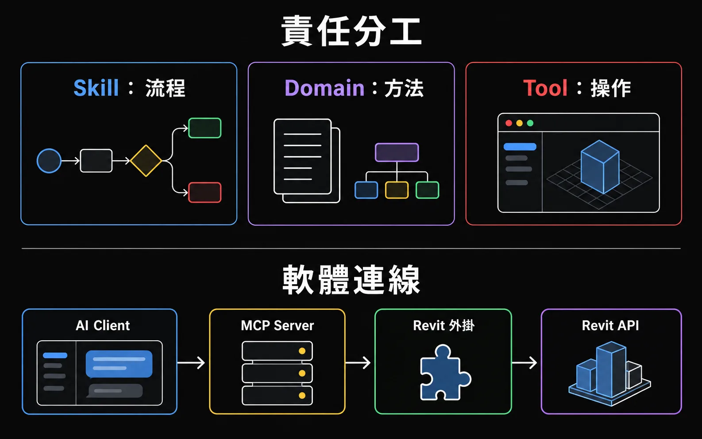

MAINTENANCE · 維護規則不屬於這三種職責
CLAUDE.md 是專案的 AI 指引檔，記載專案維護規則（建置、部署、QA/QC、記錄）與多 AI Client 共用指引；AGENTS.md 與 GEMINI.md 刻意轉向它（CLAUDE.md 第 3 行）。GEMINI.md 是指向 CLAUDE.md 的薄殼。它不是第四種架構層，不放工作流程步驟或具體算法。
REVIT_MCP 的核心架構：把 100 個 Domain、276 個工具按職責分開：Skill 管「流程」（怎麼編排步驟）、Domain 管「方法」（法規、公式、邊界案例）、Tool 管「操作」（真正去查或改 Revit）。CLAUDE.md 另外記載專案維護規則與多 AI Client 共用指引，不屬於這三種職責。本頁同時澄清「MCP ≠ Skill」的常見誤解。
社群常爭論「Skill 會不會取代 MCP」。答案是不會——MCP 是廚房（給 AI 能力），Skill 是食譜（給 AI 知識）。兩者缺一不可。
"Tools are designed to be model-controlled, meaning that the language model can discover and invoke tools automatically."
（工具被設計為模型控制的，意即語言模型可以自動發現並調用工具。）
— MCP Specification: Tools
"Skills load on-demand and eliminate the need to repeatedly provide the same guidance across multiple conversations."
（技能按需載入，消除了在多次對話中重複提供相同指引的需要。）
— Anthropic: Agent Skills Overview
| 維度 | MCP Tool | Agent Skill |
|---|---|---|
| 角色 | 能力層（DO）— 廚房 | 知識層（KNOW）— 食譜 |
| 控制者 | LLM 自動選擇 | 關鍵字觸發 → 按需載入 |
| 粒度 | 單一原子操作 | 多步驟工作流編排 |
| 需要基礎設施 | 是（Server process） | 否（純檔案） |
"We'll also explore how Skills can complement Model Context Protocol (MCP) servers by teaching agents more complex workflows that involve external tools and software."
（我們也將探討 Skill 如何補充 MCP 伺服器，透過教導 Agent 涉及外部工具的更複雜工作流程。）
— Anthropic Engineering Blog
"Skills describe the workflow. MCP provides the runner... Saying Skills killed MCP is like saying GitHub Actions killed Bash."
（Skill 描述工作流程。MCP 提供執行器……說 Skill 殺死了 MCP，就像說 GitHub Actions 殺死了 Bash。）
— Block/Goose Team
override_element_graphics 真的去改 Revit model 顏色，query_elements_with_filter 真的查 Revit 資料庫。
這些操作需要 WebSocket、Revit API、Transaction。Skill 做不了這些。
/fire-safety-check 告訴 AI「先查參數名 → 再列時效等級 → 再篩選 → 最後上色」。
這是知識和順序，不是能力。MCP 不管這些。
三者各自管獨立職責：Skill 是流程、Domain 是方法、Tool 是操作。當 Domain 與 Skill 對方法描述不同時，以 Domain 為準（README.zh-TW.md「Domain、Skill、Tool 的分工」）。

.claude/skills）放在 .claude/skills/{name}/SKILL.md，是 AI 執行工作流程的編排層。關鍵字觸發後按需載入，告訴 AI「該做什麼步驟、引用哪個 Domain、呼叫哪些 MCP Tool」。
本專案目前 62 個 Skill。
domain/）放在 domain/*.md。BIM SOP、法規邏輯、計算方法；人類與 AI 共用的知識層，不能全英文化。不可協商的限制——法規、SOP、計算公式、邊界案例，被多個 Skill 引用（複用）。
本專案目前 100 個 Domain。
MCP-Server/src/tools、MCP/Core/Commands）MCP-Server/src/tools/*.ts 定義 MCP 工具與輸入 schema；MCP/Core/Commands/*.cs 是真正呼叫 Revit API 的實作。
本專案目前共 239 個 Tool。
CLAUDE.md 是專案的 AI 指引檔，記載專案維護規則（建置、部署、QA/QC、記錄）與多 AI Client 共用指引；AGENTS.md 與 GEMINI.md 刻意轉向它（CLAUDE.md 第 3 行）。GEMINI.md 是指向 CLAUDE.md 的薄殼。它不是第四種架構層，不放工作流程步驟或具體算法。
BIM 的知識是共用的——防火法規同時被消防檢查與元素上色引用。Domain 獨立於 Skill 存在，是因為知識不應該重複在每個 Skill 裡。
domain/fire-rating-check.md 同時被以下兩個 Skill 引用（.claude/skills/fire-safety-check/SKILL.md、.claude/skills/element-coloring/SKILL.md）：
/fire-safety-check — 消防安全檢討（防火時效視覺化）/element-coloring — 元素上色（依防火時效參數著色）如果防火法規條文更新，只動 domain/fire-rating-check.md 一處，兩個 Skill 引用的是同一份方法。這就是「Domain 是本體」（P5）的具體含義。
Skill / Domain / Tool 是「責任分工」，下面這個是「技術四層」——AI Client → MCP Server → Revit Add-in → Revit API。
AI Client (Claude Desktop / Gemini CLI / VS Code Copilot / Claude Code)
↓ stdio
MCP Server (Node.js/TypeScript) — MCP-Server/src/index.ts
↓ WebSocket (ws://localhost:8964)
Revit Add-in (C#；R22–R24 為 .NET Framework 4.8，R25–R26 為 .NET 8) — MCP/Application.cs
↓ ExternalEventManager (UI thread)
CommandExecutor → Revit API另有一個「embedded」方向——WPF chat window 內嵌在 Revit Add-in，直接呼叫 AI API，繞過 MCP Server。這是曾規劃的方向，非已實作功能（CLAUDE.md Project Overview：repo 內尚無實作）。Add-in 的 .NET 版本依 Revit 版本而不同（README.md 第 88 行）。
check_smoke_exhaust_windows 比 FilteredElementCollector.OfCategory(...) 友善 100 倍）。本專案支援多個 AI Client，採用「不同入口、同一目的地」規範。
| 項目 | Claude Code | Gemini CLI | VS Code Copilot |
|---|---|---|---|
| 行為指引 | CLAUDE.md | GEMINI.md → CLAUDE.md | .github/copilot-instructions.md |
| Skills | .claude/skills/SKILL.md |
.gemini/skills/SKILL.md |
instructions 引導 |
| Domain 文件 | 共用 domain/ |
共用 domain/ |
共用 domain/ |
| MCP Tools | 共用 276 個工具 | 共用 276 個工具 | 共用 276 個工具 |
| Event Log | 共用 log/ |
共用 log/ |
共用 log/ |
SKILL.md 格式遵循 Agent Skills 開放標準（YAML frontmatter + Markdown body），Claude Code 與 Gemini CLI 皆原生支援。
GEMINI.md 內容就是 CLAUDE.md）。Skill 層遵守 Anthropic 制定的 Agent Skills 開放標準（YAML frontmatter + Markdown），任何支援標準的 AI Client 都能用。Domain / MCP / Log 全跨 client 共用。